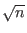
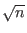

It is not directly proved, but simply stated in Grover's 1996 paper that his result was optimal.
It was established in [BBBV96] that any quantum algorithm can not
identify a single marked element in fewer than
( ).
Grover's algorithm takes
O() iterations, and is thus
asymptotically optimal.
).
Grover's algorithm takes
O() iterations, and is thus
asymptotically optimal.
It has been shown since that any quantum algorithm would require at
least
 /4
/4 queries, which is precisely the number queries
required by Grover's algorithm. [Grover99]
queries, which is precisely the number queries
required by Grover's algorithm. [Grover99]